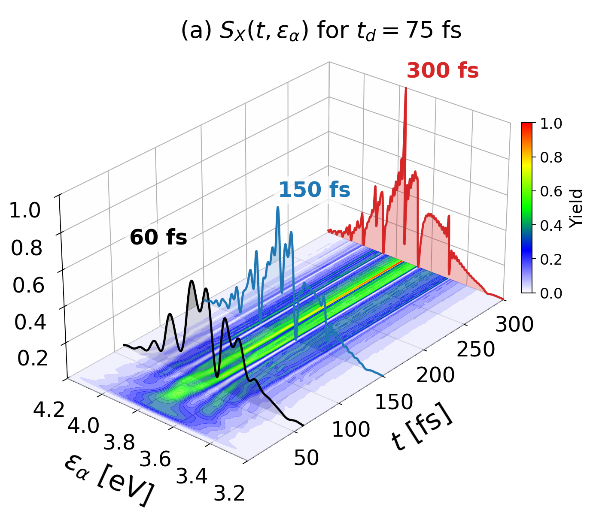

Active · 2021 –
Ultrafast dynamics of molecular Rydberg states
A time-domain Fano model for autoionizing Rydberg states in molecules, applied to CO₂ and compared against pump–probe measurements.

The question
A molecule excited into a Rydberg state above its ionization threshold is degenerate with the continuum and leaks into it. This is autoionization, and the interference between the direct and resonant paths to the same final state produces the asymmetric Fano lineshape described in 1961.
A Fano profile, however, is a spectrum: it is what remains after the process has finished, and it carries no direct record of the order in which things happened. In a molecule that matters, because the nuclei move while the electronic dynamics unfold. The state can predissociate as well as autoionize, electronic and nuclear motion are coupled, and the Born–Oppenheimer separation that makes molecular structure tractable is exactly what fails here.
Approach
We developed a general analytical model based on the Fano formalism, so that the interference is something that accumulates over a computable interval rather than a shape fitted after the fact. An XUV pulse prepares the Rydberg wave packet and a delayed near-infrared pulse ionizes it while it decays; scanning the delay resolves the decay as it happens.
CO₂ is the working case, because the relevant structure is well characterized and there are measurements to check against. Ground-state CO₂ is excited by an attosecond XUV pulse train into the \(nd\sigma_g\) Henning-sharp and \(ns\sigma_g\) Henning-diffuse Rydberg series, and a delayed near-infrared probe ionizes those states to the \(B\,^2\Sigma_u^+\) limit. Using Fano parameters and solving the time-dependent Schrödinger equation, we simulate the build-up and decay of the resonant states and the photoelectron yields measured as a function of delay.
Open problems
Beyond Born–Oppenheimer. The lifetimes of autoionizing states — and predissociative states especially — are comparable to nuclear motion timescales, so the nuclei cannot be treated as fixed. Extending the model to keep the nonadiabatic couplings would give access to nonadiabatic transitions, vibronically modified autoionization, and ultrafast predissociation, all of which are visible as distortions of the asymmetric Fano lineshape.
The inverse problem. Given a measured delay-dependent yield, how much of the underlying nuclear–electronic dynamics can actually be recovered, and how much is lost to the averaging the measurement performs? This is the same class of question as in the nanoparticle work, and the two projects tend to borrow methods from each other.
A manuscript on time-resolved Rydberg dynamics in molecules is in preparation.
Figures
